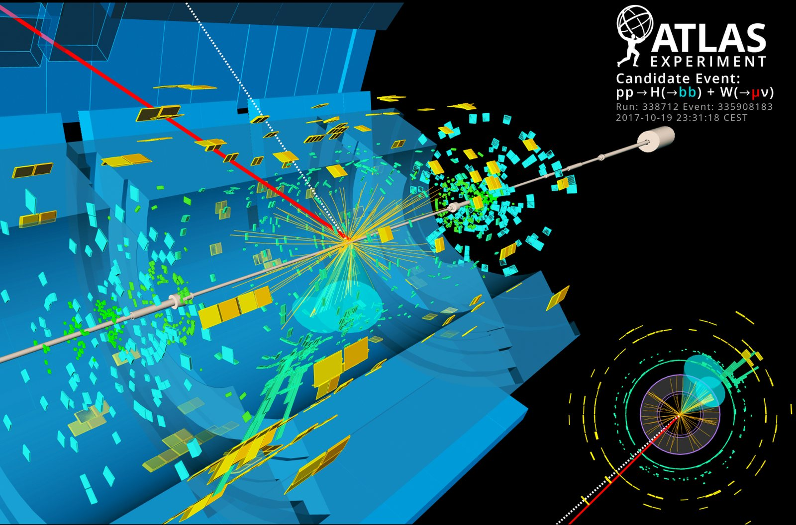

Research
Where the tools for discovery get made
Most of the work here is building the instruments a search needs, and then running the search. The five themes below cover those methods, and their initials happen to spell FORGE.
The first four are methods. The last is what they are built for. Each one was developed for a specific measurement and then released, so that other groups can adapt it for theirs.
